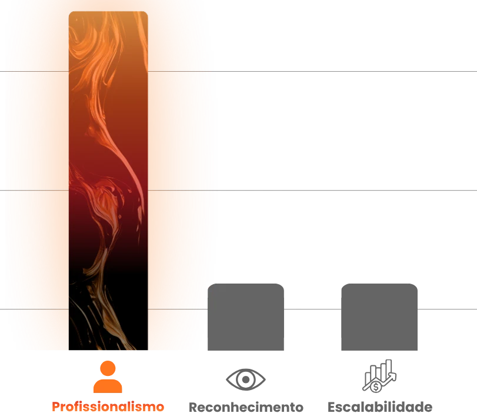
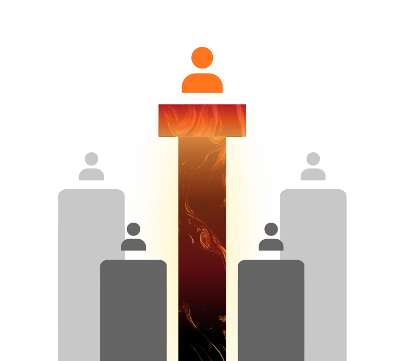
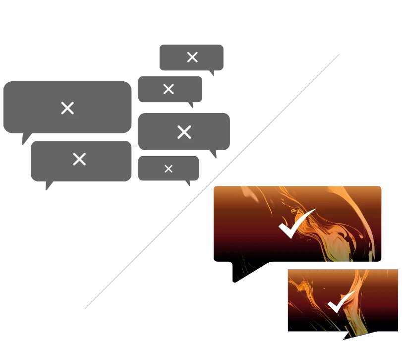
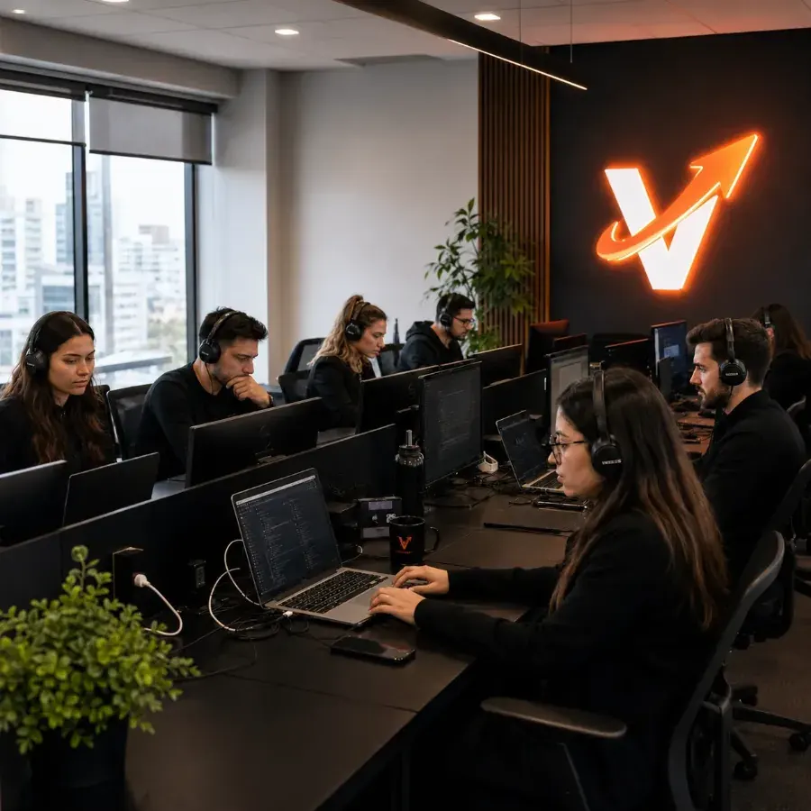

Resultados reais de donos de delivery que aceleraram com a Vegas
QUERO ESSES RESULTADOSCada painel abaixo é de um restaurante ou delivery atendido pela Vegas: pizzarias, hamburguerias, restaurantes e operações de delivery que passaram a anunciar com estratégia e acompanhar pedidos, ticket médio e retorno sobre o investimento em anúncios.


Do anonimato à referência
da sua região
Marketing para restaurantes focado em vendas: posicionamento, criativos e campanhas que levam o cliente da descoberta ao pedido — no delivery, no cardápio digital e no salão.
Não adianta ter o melhor produto e não ser reconhecido na sua região.
Produto excelente é obrigação — escala é estratégia. Unimos especialistas em marketing para restaurantes e gestão de tráfego pago (Meta Ads e Google Ads) para tirar o seu delivery do anonimato e colocar dinheiro no caixa todos os dias.

Cansado de ser apenas "mais um" delivery no iFood? É hora de se tornar a referência.
Transformamos seu cardápio em uma marca desejada. Com posicionamento, criativos e campanhas de tráfego pago para delivery, você domina a concorrência da sua cidade e escala o faturamento — dentro e fora dos aplicativos.

Deixe de ser apenas uma opção e torne-se o desejo do seu cliente.
Transformamos o "tanto faz" em preferência absoluta. Funil de vendas, remarketing e automação no WhatsApp convertem visualizações em pedidos reais — e clientes de primeira compra em pedidos recorrentes.

Mais pedidos no delivery.
Mais clientes no salão.
Não vendemos alcance nem seguidores. Montamos um sistema de crescimento para a sua operação de alimentação em três etapas: atrair quem tem fome perto de você, transformar essa atenção em pedido e fazer esse cliente voltar a comprar.
Como funciona o marketing para restaurantes?
Marketing para restaurantes é o conjunto de estratégias usadas para atrair novos clientes, aumentar pedidos, elevar o ticket médio e estimular a recompra de uma operação de alimentação. A estratégia combina tráfego pago, presença no Google, redes sociais, marketplaces como o iFood, cardápio digital, WhatsApp e base própria de clientes — o peso de cada canal muda conforme o modelo da operação.
Na Vegas Aceleradora, esse trabalho é executado em três frentes — aquisição, conversão e recorrência — com gestão de tráfego pago no Meta Ads e no Google Ads, criativos e oferta, funil de vendas no WhatsApp e automação de recompra. As decisões partem da operação: raio de entrega, horário de pico, cardápio, capacidade da cozinha e margem.
O que medir no marketing de um restaurante?
Alcance e seguidores não pagam a conta. Para food service, as métricas que aproximam marketing e caixa são: número de pedidos, ticket médio, custo de aquisição por cliente (CAC), retorno sobre o investimento em anúncios (ROAS), taxa de recompra e faturamento por canal.
Tráfego pago funciona para restaurantes?
Sim — quando campanha, oferta, raio de atendimento, criativo e canal de conversão são trabalhados juntos. Anúncio isolado gera visualização; é a combinação com oferta clara e atendimento rápido no WhatsApp ou no cardápio que transforma clique em pedido.
iFood ou delivery próprio?
Os dois. O marketplace traz volume e novos clientes; o canal próprio (WhatsApp, cardápio e base de clientes) protege a margem e é um ativo do restaurante. A decisão não é abandonar um, é diversificar — e usar o canal próprio para a recompra, onde a taxa pesa menos.
Agência generalista ou especializada em food service?
Uma agência generalista precisa aprender a sua operação; uma especializada já parte dela. Em restaurantes e delivery, detalhes como dia de baixo movimento, tempo de entrega, combo, upsell e capacidade de produção mudam completamente a estratégia de mídia.
Muito potencial, pouco resultado? Isso acaba aqui.
Tráfego da esperança
Um gestor sem clareza sobre food service anuncia no escuro: o alcance sobe, o salão continua vazio e o delivery não sente diferença.
Desconto como única saída
Sem estratégia, sobra promoção: o pedido entra com margem apertada, o cliente compra uma vez e nunca volta.
Por que escolher a Vegas Aceleradora?
Tudo o que o seu delivery precisa para vender todos os dias — em um só time.
Tráfego pago que vira pedido
Campanhas no Meta Ads e Google Ads criadas para delivery: você aparece para quem está com fome, na hora certa, na sua região — e paga pelo que traz retorno.
Funil de vendas no WhatsApp
Atendimento e ofertas automáticas que transformam conversas em pedidos.
Menos dependência do iFood
Canais próprios fortalecidos para você lucrar mais em cada pedido, sem taxas abusivas.
Automação de recompra
Cliente que pediu uma vez volta a pedir: campanhas de recorrência direto no WhatsApp.
Relatórios sem enrolação
Você sabe exatamente quanto investiu e quanto voltou, com métricas claras todo mês.
Da análise gratuita à escala
em 3 passos
Uma assessoria construída dentro do delivery
A Vegas Aceleradora é uma assessoria de marketing especializada em restaurantes e delivery, no mercado desde 2019 e atuando em todo o Brasil. Atende operações de food service — restaurantes, deliveries, hamburguerias, pizzarias, japoneses, cafeterias, bares e dark kitchens — com gestão de tráfego pago no Meta Ads e no Google Ads, criativos e oferta, funil de vendas no WhatsApp e automação de recompra, sempre com o objetivo de aumentar pedidos, ticket médio e faturamento.
O trabalho é organizado em aquisição, conversão e recorrência, com contrato sem fidelidade e garantia de resultado. Veja os resultados de restaurantes atendidos ou as perguntas frequentes sobre marketing para restaurantes.

O que nossos clientes dizem
Donos de delivery e restaurante que aceleraram com a Vegas.
Perguntas frequentes sobre marketing para restaurantes
Se a sua pergunta não estiver aqui, fale direto com o nosso time no WhatsApp.